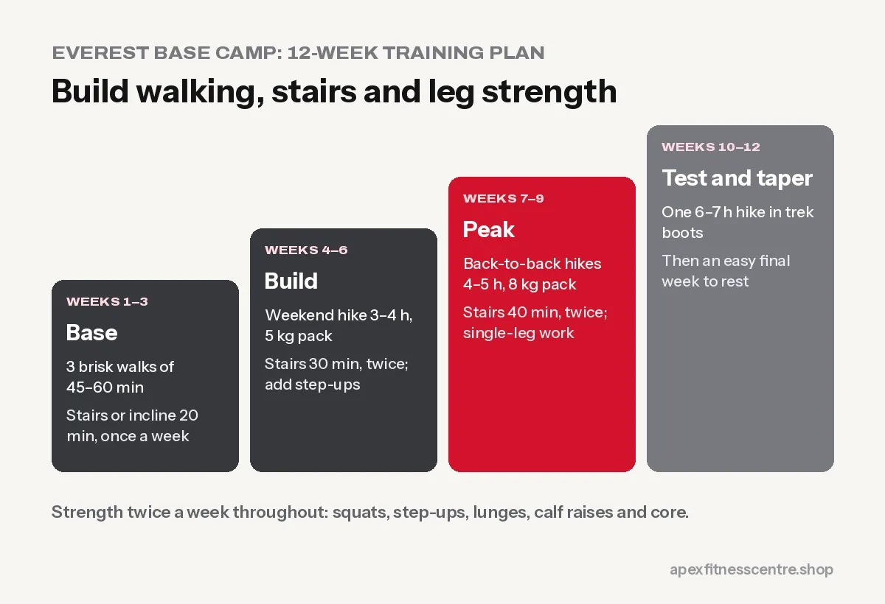

Everest Base Camp Trek Training Plan: How to Get Fit in 12 Weeks
How fit do you need to be for Everest Base Camp? A 12-week plan with hill walks, stairs, strength work and altitude advice.

You do not need to be an athlete to reach Everest Base Camp (5,364 m). You need to be able to walk 5 to 7 hours a day, several days in a row, up and down hills, with a small backpack. Train for that specific job for about 12 weeks and the trek becomes something you enjoy rather than survive.
What fitness cannot protect you from is altitude sickness. That depends on going up slowly, not on how fit you are.
What the trek actually asks of your body
- Distance: the classic return route from Lukla is roughly 130 km, usually over 12 to 14 days including acclimatisation days.
- Daily walking: typically 5 to 7 hours, with some longer days.
- Height gain: from Lukla (about 2,860 m) to Base Camp at 5,364 m, with many ups and downs.
- Downhills: the walk down is hard on knees and thighs, often harder than people expect.
- Load: a daypack of 5 to 8 kg if porters carry your main bag, around 12 to 15 kg if you carry everything.
Responsible Travel describes the benchmark simply: if you are comfortable walking 5+ hours a day in hilly countryside, you are ready.
Are you fit enough? A 5-point self-test
Try these before you start training, and again 2 weeks before you fly. If you can do all five comfortably, you are in good shape for the trek.
| Test | Ready if you can… |
|---|---|
| Long walk | Walk 5 hours with breaks, then walk again the next day |
| Stairs | Walk up and down 20 floors at a steady pace without stopping for long |
| Step-ups | Do 20 step-ups on each leg onto a knee-height step |
| Pack walk | Walk 2 hours with the backpack you will carry on the trek |
| Downhill | Walk down 10 floors of stairs without knee pain |
Failed one or two? That shows you what to train most. Struggling with all five? Give yourself the full plan below, or more time.
The 12-week plan
Train 4 to 5 days a week. Build up gradually.
| Weeks | Walking / hiking | Stairs or incline | Strength (2x a week) |
|---|---|---|---|
| 1–3 | 3 brisk walks of 45–60 min | 20 min stairs or treadmill incline, 1x | Full-body basics |
| 4–6 | 1 long hike of 3–4 hours on weekends, with 5 kg pack | 30 min stairs, 2x | Add step-ups and lunges |
| 7–9 | Back-to-back hikes on Sat and Sun, 4–5 hours, 8 kg pack | 40 min stairs, 2x | Heavier step-ups, single-leg work |
| 10–11 | One 6–7 hour hike in your trek boots | 45 min stairs | Maintain |
| 12 | Easy week: short walks, stretching, rest | Light | Light |
Living in Nepal? You have a big advantage. Hikes around the Kathmandu valley rim, like Shivapuri, Nagarkot or Champadevi, or local hills wherever you live, are perfect training.

Strength exercises that matter most
Do these twice a week, 3 sets of 10 to 15:
- Step-ups on a bench or high stair, with a backpack
- Walking lunges
- Squats (see our squat form guide)
- Romanian deadlifts for hamstrings and lower back
- Calf raises
- Plank and side plank for a stable core under a backpack
Slow downhill walking and step-downs (stepping down slowly from a box) prepare your knees for the long descents.
Altitude: what fitness cannot fix
Altitude sickness can affect anyone, including very fit people. The basics:
- Ascend slowly and take the planned acclimatisation days, usually at Namche Bazaar and Dingboche.
- “Climb high, sleep low”: short walks higher in the afternoon, then sleep lower.
- Drink enough water, avoid alcohol.
- Know the warning signs: headache, nausea, dizziness, unusual tiredness, poor sleep.
- Serious signs such as confusion, loss of balance or breathlessness at rest mean you must go down immediately and get medical help.
Speak to a doctor before the trek, especially about altitude medicine and any health conditions.
How much energy will each day take? Try the free trekking calorie calculator with your weight and walking hours.
Gear and practice
- Break in your boots over at least 3 to 4 long hikes before the trek.
- Train with the backpack you will carry.
- Use trekking poles on the downhills. They take a lot of load off your knees.
- Practise layering clothes, mornings at high altitude are very cold.
Frequently asked questions
Can a beginner do the Everest Base Camp trek?
Yes, with 2 to 3 months of steady preparation and a sensible itinerary with acclimatisation days. Many first-time trekkers complete it every season.
How many hours a day do you walk on the EBC trek?
Usually 5 to 7 hours, with some shorter acclimatisation days and some longer days near Base Camp.
Is gym training useful for trekking?
Yes, especially leg strength, step-ups and stair or incline walking. But real hikes with a pack are the most important part of your training.
Does being fit prevent altitude sickness?
No. Fitness helps you enjoy the trek, but altitude sickness depends mainly on how fast you go up and on individual factors.
Sources
- CDC Yellow Book: high-altitude travel and altitude illness (Centers for Disease Control and Prevention)
- WHO fact sheet: physical activity (World Health Organization)
General information, not medical advice. Check with a doctor before high-altitude trekking, especially if you have heart, lung or blood pressure problems.
General information, not medical advice. Ask a doctor if you have a health condition. Results vary from person to person.
Comments
Loading comments…